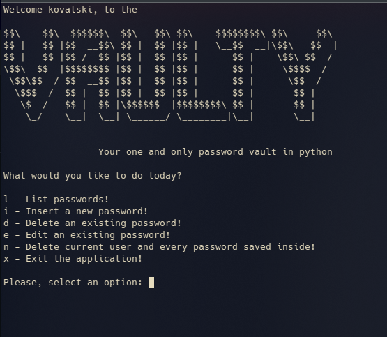

Portfólio!

- Meu nome é André Luiz Kovalski, mas gosto que me chamem de Kovalski.
- Cursando o 5° período de Ciência da Computação na PUCPR.
- Sou técnico em informática cursado na TECPUC.
O que eu sei?
- Desenvolvimento backend em Java com Spring Boot;
- Desenvolvimento backend com NodeJS;
- MySQL basico;
- C basico;
- Python basico;
Projetos:
Guitarino
Guitarino é um jogo inspirado no Guitar Hero, feito com um arduino mega e uma matriz de 50 LEDS,
possui 5 botões e um buzzer para tocar musica,
O usuário pode escolher as dificuldades, de fácil até dificil, e salvar a sua pontuação na memória
do arduino.
Veja o projeto Aqui
Vaulty

Vaulty é um password vault, desenvolvido em python, 100% offline com criptografia simétrica AES-256
Veja o projeto Aqui
Minesweeper
Minesweeper feito em C, utilizando a biblioteca gráfica GTK3.0
GUI programada por Leonardo Knight,
Lógica do jogo programada por André Kovalski
GUI programada por Leonardo Knight,
Lógica do jogo programada por André Kovalski